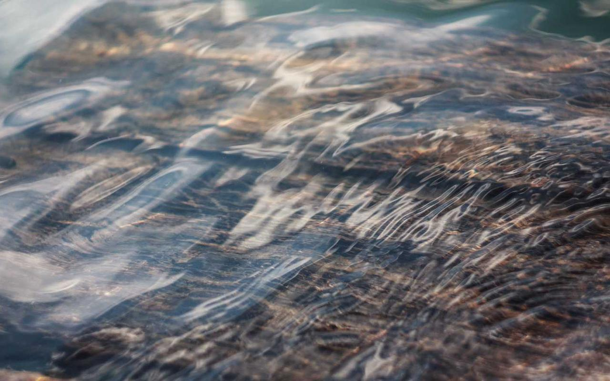

Meet the Hawkins Crew
From Eleven's telekinetic powers to Mike's unwavering leadership, the kids of Hawkins are more than just friends – they're a force against the darkness. Dive into the stories of El, Mike, Dustin, Lucas, and Will, and discover their strengths, their fears, and their unbreakable bond. Even Hopper and Joyce are here to help guide you.

Eleven's Telekinetic Abilities
El's powers are both a gift and a burden, making her a key player in the fight against the Upside Down.

Mike's Leadership
As the leader of the party, Mike's courage and determination keep the group together, even in the face of unimaginable danger.

Dustin's Comedic Relief
With his wit and charm, Dustin provides much-needed comic relief, reminding everyone to stay positive, even when things look bleak.
Navigate Hawkins and Beyond
From the eerie halls of Hawkins National Laboratory to the terrifying depths of the Upside Down, every location holds a secret. Explore interactive maps and uncover the hidden stories behind these iconic places, but beware – danger lurks around every corner.

Hawkins National Laboratory: Government Secrets
A secretive government facility where experiments are conducted, leading to the opening of the gate to the Upside Down.

The Upside Down: Alternate Dimension
A dark and twisted reflection of our world, filled with terrifying creatures and lurking dangers.
Relive the 80s Vibe
Immerse yourself in the sights and sounds of the 1980s, the decade that defined Stranger Things. From synthwave music to retro electronics, experience the nostalgia that fuels the show's unique atmosphere. Check out some retro playlists from Spotify.
Synthwave Music
The pulsating rhythms and electronic melodies of synthwave capture the eerie and mysterious atmosphere of the show.